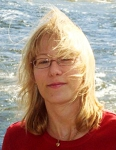
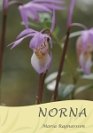
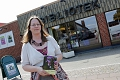

Maria Kristina Persson Ragnarsson
Författare, lärare, bibliotekarie i Båstad; tidigare i Klippan.
| Född: | 1974-03-15 Kalmar, Kalmar fs, Kalmar kn. [1] |
|---|
| Levde: | 1981 Långseglaren 4, Stallmästareg 41, Linköping, Berga fs, Linköpings kn. [2] |
|---|
| Levde: | 1991 Rävhonan 2, Linköping, Kanngatan 21, Berga fs, Linköpings kn. [1] |
|---|
| Vigsel: | 1999-07-17 Hjärnarp, Hjärnarps fs, Ängelholms kn. [3] |
|---|
| Barn: |
|---|
| Erica Ragnarsson (2000 - ) |
| Oscar Ragnarsson (2003 - ) |
| Johanna Ragnarsson (2004 - ) |
Noteringar
Maria Ragnarsson har fr.o.m. våren 2018 en ny tjänst som bibliotekarie i Båstad, där hon bland annat ansvarar för vuxenskönlitteraturen, tidskrifterna, samt programverksamheten med fokus på litteraturen.
Bibliotekarien som vände blad. Skrev en egen bok om familjehistorien 2012-06-05
KLIPPAN. För Maria Ragnarsson, bibliotekarie på Klippans bibliotek, är böcker en självklar del av livet. Nu debuterar hon också som författare med den självbiografiska släktromanen "Norna".
Maria Ragnarssons farfar Henry dog endast 19 år gammal vid en gruvolycka i Malmberget år 1948. Även hennes farmor Mary dog för tidigt för att Maria ska ha några minnen av henne. När jag flyttstädade sommaren 2007 hittade jag ett gammalt släktträd och det slog mig att jag egentligen inte visste något om min farfar och farmor. Jag började gräva i deras historia och intervjuade alla som kom ihåg dem. Mitt intresse för släktforskning väcktes.
Året därpå kom en inbjudan till en släktträff i Bastuträsk. Maria som inte hade varit i Norrland på 25 år nappade direkt. Inbjudan blev sparken som jag behövde för resa norrut.
Kända släktingar
Hela Maria Ragnarssons släkt på hennes fars sida är från Västerbotten och Lappland. Själv har hon dock vuxit upp i Östergötland.
Nu fick jag veta hur min farmor hamnat i Östergötland och det berättar jag också i boken.
En släkting som har hjälpt till är Sam Nilsson, före detta vd för SVT. Han och min farfar var kusiner och lekte tillsammans som barn, så jag har jag pumpat honom på information. Han har stöttat mig och har också skrivit förordet till "Norna".
Dessutom har Maria upptäckt flera intressanta förbindelser hon inte kände till. Det visade sig att jag är släkt med alla de här Norrlandsförfattarna som Torgny Lindgren, Per Olov Enquist, Sara Lidman, Åke Lundgren och Martin Lönnebo, säger Maria och fortsätter: Man har alltid hört att de är släkt med varandra och det stämmer, men att jag var släkt med dem kom som en överraskning.
Till barnen
Ett flertal släktingar har läst boken och kontrollerat att hon har fått rätt på alla detaljer. Min faster har sagt att om min farmor Mary hade levt, hade hon varit glad och jättestolt.
Parallellt med sin farmors och farfars historia berättar Maria i boken även om sin egen resa och varför hon skrev verket. Den färdiga boken kom ut i slutet av april. Jag skrev boken för att mina barn ska få kännedom om sin familj. Annars hade nog släktforskningen bara hamnat i någon byrålåda, precis som det släktträd jag hittade, säger hon och ler.
Foto och text: Christin Andersson
Publicerad: 05. juni 2012 03:00
Läs mer:
bjuv.lokaltidningen.se/nyheter/2012-06-05/-Bibliotekarien-som-v%C3%A4nde-blad-187518.html
Förordet till "Norna" uppdaterat:
www.minaboktips.se/
Personhistoria
| Årtal | Ålder | Händelse |
|---|
| 1974 |
|
Födelse 1974-03-15 Kalmar, Kalmar fs, Kalmar kn [1] |
| 1976 |
2 år |
Systern Jenny Kristina Persson föds 1976-07-26 Linköping, Berga fs, Linköpings kn [1] |
| 1981 |
|
Levde 1981 Långseglaren 4, Stallmästareg 41, Linköping, Berga fs, Linköpings kn [2] |
| 1983 |
9 år |
Halvsystern Anna Kristina Tränk föds 1983-11-15 Linköping, Berga fs, Linköpings kn [1] |
| 1991 |
|
Levde 1991 Rävhonan 2, Linköping, Kanngatan 21, Berga fs, Linköpings kn [1] |
| 1999 |
25 år |
Vigsel Alf-Erik Ragnarsson 1999-07-17 Hjärnarp, Hjärnarps fs, Ängelholms kn [3] |
| 2000 |
|
Dottern Erica Ragnarsson föds 2000 Hjärnarp, Hjärnarps fs, Ängelholms kn [3] |
| 2003 |
|
Sonen Oscar Ragnarsson föds 2003 Hjärnarp, Hjärnarps fs, Ängelholms kn [3] |
| 2004 |
|
Dottern Johanna Ragnarsson föds 2004 Hjärnarp, Hjärnarps fs, Ängelholms kn [3] |
Dokument
Källor
| [1] | Mantalslängd 1991, Östergötlands län |
| |
| | |
| [2] | Mtl Östergötlands län 1981 |
| |
| | |
| [3] | Maria Ragnarsson |
| |
|
|  |
2012. Maria Ragnarsson, Fil.mag. språk, Bibliotikarie, Författare
Maria Ragnarsson, född 1974, är utbildad gymnasielärare och bibliotekarie. Att tipsa om pärlor i bokfloden gör hon gärna ¿ både på bokbloggen Minaboktips.se och i mötet med låntagare på biblioteket där hon arbetar. Med den självbiografiska släktberättelsen "Norna" debuterar Maria som författare.
www.minaboktips.se/
|
| |
|  |
2012-04-10. Maria Ragnarsson, Fil.mag. språk, Bibliotikarie, Författare
Norna
Copyright©Maria Ragnarsson 2012
Ansvarig utgivare: vulcan.se
Omslagsfoto: (blomman Norna)©Erik Normark
ISBN 978-91-637-0420-8
www.minaboktips.se/
|
| |
|  |
2012-06-05. Maria Ragnarsson arbetar som bibliotekarie på Klippans bibliotek, men nu har hon också gett ut en egen bok i form av den självbiografiska släktromanen ”Norna”.
Text och Foto: Christin Andersson
Publicerad: 05. juni 2012
bjuv.lokaltidningen.se/bibliotekarien-som-vände-blad-/20120605/artikler/706079959/#ixzz1x0S9pdqD
|
|
{kind=link}
{kind=link}
{kind=link}